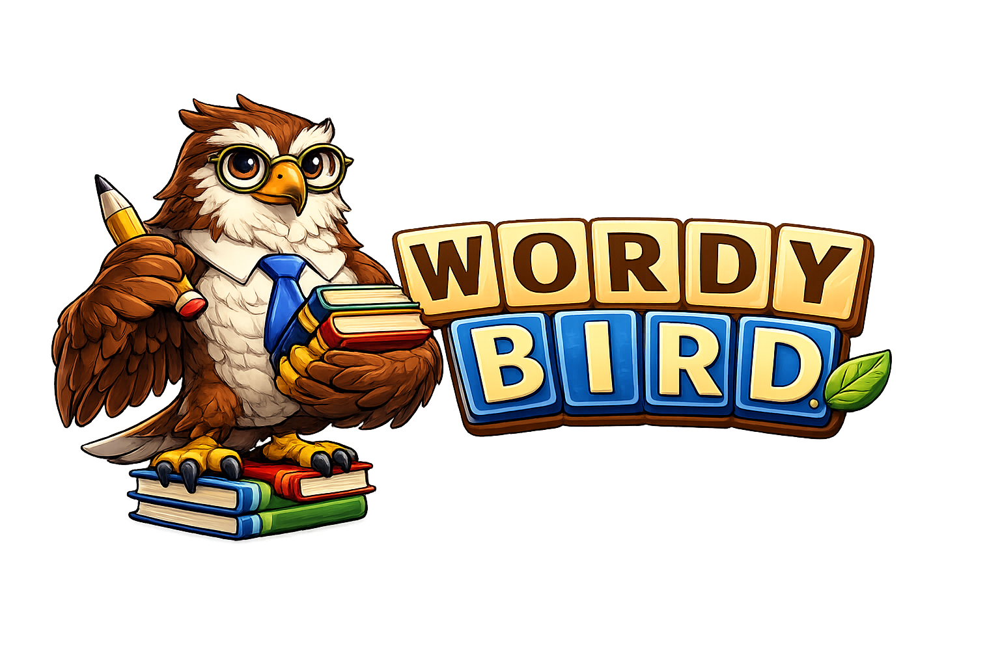

Support
How to play
Drag your finger across neighboring letter tiles to spell a word. Longer and rarer words score more points. As you clear the board, fresh letters drop in — so there’s always another word waiting. The Daily Challenge resets every day; Survival keeps going as long as you can.
Frequently asked
Why am I seeing ads?
Wordy Bird is free, and ads help fund development. If you’d rather play without them, open Settings → Remove Ads to make a one-time purchase.
I bought Remove Ads, but they’re back
Open Settings and tap Restore Purchases. This restores any purchase made under your current Apple ID or Google account.
Where do I see my high scores?
From the home screen, open Nerdy Bird. You’ll find your stats, badges, and the Word Hall of Fame there.
My streak reset or something looks wrong
The streak counter ticks over once per calendar day on your device. If something looks off, force-quit the app and reopen it. If it persists, email us with a screenshot.
Can I sync progress to another device?
Not yet — progress is stored on your device. Cloud sync is on the list.
The app crashed or something is broken
Sorry! Email us with a quick description of what you were doing and your device model. Screenshots help a lot.
Contact
Email support@niftyrobot.org. Replies usually come within a couple of business days.
Privacy
See our Privacy Policy for what data the app collects and how it’s used.